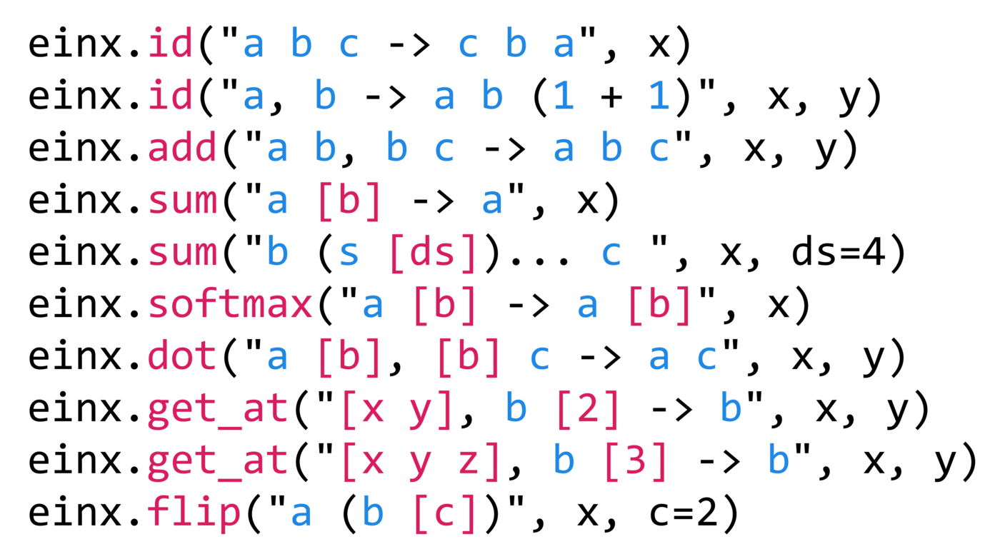
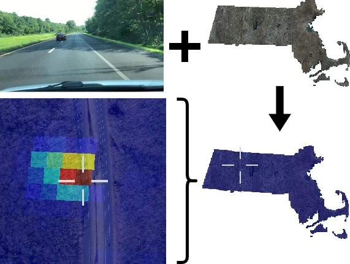
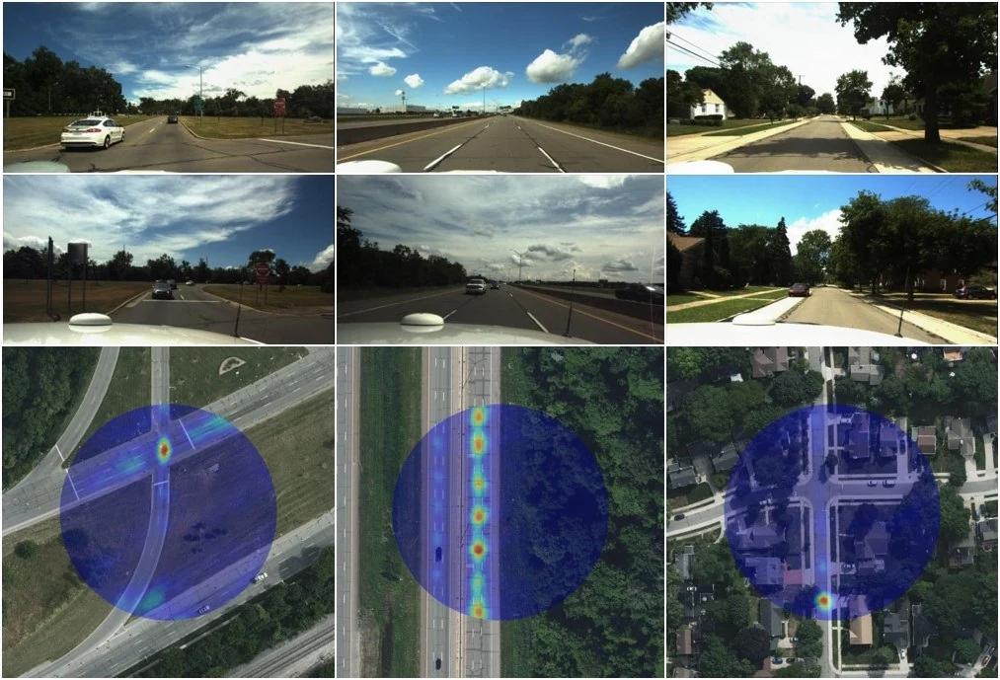
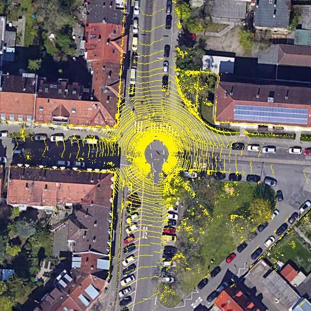
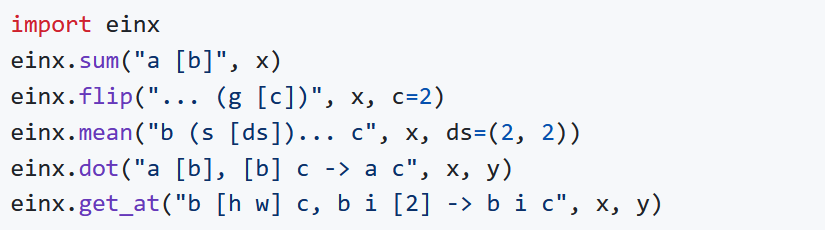
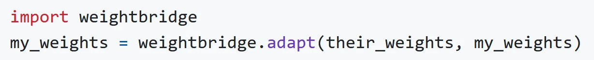
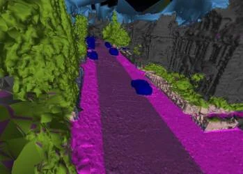

I am a postdoc working at Fraunhofer IOSB in Karlsruhe. I previously completed my PhD with Prof. Rainer Stiefelhagen from KIT and Prof. Bastian Leibe from RWTH Aachen.
My work lies at the intersection of computer vision and deep learning. My ongoing research focuses on image-based localization utilizing large-scale, geo-referenced world models.
News
Our work It’s All Just Vectorization: einx, a Universal Notation for Tensor Operations has been accepted at ICLR 2026 as an oral.
I successfully defended my PhD thesis at KIT! 🎓
I gave an invited talk on Cross-view Geolocalization at Google Geo (Zurich).
Our work Statewide Visual Geolocalization in the Wild has been accepted at ECCV 2024.
Published einx.
I gave an invited talk on Cross-view Geolocalization at the 18th Dortmunder Autotag.
I gave an invited talk on Cross-view Geolocalization at the CVPR 2023 tutorial A Comprehensive Tour and Recent Advancements toward Real-world Visual Geo-Localization.
Our work Uncertainty-aware Vision-based Metric Cross-view Geolocalization has been accepted at CVPR 2023.
Our work Continuous Self-Localization on Aerial Images Using Visual and Lidar Sensors has been accepted at IROS 2022.
Selected Publications
-

It’s All Just Vectorization: einx, a Universal Notation for Tensor Operations
ICLR 2026 (Oral) (Acceptance rate: 27%, Oral: 1%)
Tensor operations represent a cornerstone of modern scientific computing. However, the Numpy-like notation adopted by predominant tensor frameworks is often difficult to read and write and prone to so-called shape errors, i.a., due to following inconsistent rules across a large, complex collection of operations. Alternatives like einsum and einops have gained popularity, but are inherently restricted to few operations and lack the generality required for a universal model of tensor programming.
To derive a better paradigm, we revisit vectorization as a function for transforming tensor operations, and use it to both lift lower-order operations to higher-order operations, and conceptually decompose higher-order operations to lower-order operations and their vectorization.
Building on the universal nature of vectorization, we introduce einx, a universal notation for tensor operations. It uses declarative, pointful expressions that are defined by analogy with loop notation and represent the vectorization of tensor operations. The notation reduces the large APIs of existing frameworks to a small set of elementary operations, applies consistent rules across all operations, and enables a clean, readable and writable representation in code. We provide an implementation of einx that is embedded in Python and integrates seamlessly with existing tensor frameworks: https://github.com/fferflo/einx
-

This work presents a method that is able to predict the geolocation of a street-view photo taken in the wild within a state-sized search region by matching against a database of aerial reference imagery. We partition the search region into geographical cells and train a model to map cells and corresponding photos into a joint embedding space that is used to perform retrieval at test time. The model utilizes aerial images for each cell at multiple levels-of-detail to provide sufficient information about the surrounding scene. We propose a novel layout of the search region with consistent cell resolutions that allows scaling to large geographical regions. Experiments demonstrate that the method successfully localizes 60.6% of all non-panoramic street-view photos uploaded to the crowd-sourcing platform Mapillary in the state of Massachusetts to within 50m of their ground-truth location.
-

This paper proposes a novel method for vision-based metric cross-view geolocalization (CVGL) that matches the camera images captured from a ground-based vehicle with an aerial image to determine the vehicle’s geo-pose. Since aerial images are globally available at low cost, they represent a potential compromise between two established paradigms of autonomous driving, i.e. using expensive high-definition prior maps or relying entirely on the sensor data captured at runtime.
We present an end-to-end differentiable model that uses the ground and aerial images to predict a probability distribution over possible vehicle poses. We combine multiple vehicle datasets with aerial images from orthophoto providers on which we demonstrate the feasibility of our method. Since the ground truth poses are often inaccurate w.r.t. the aerial images, we implement a pseudo-label approach to produce more accurate ground truth poses and make them publicly available.
While previous works require training data from the target region to achieve reasonable localization accuracy (i.e. same-area evaluation), our approach overcomes this limitation and outperforms previous results even in the strictly more challenging cross-area case. We improve the previous state-of-the-art by a large margin even without ground or aerial data from the test region, which highlights the model’s potential for global-scale application. We further integrate the uncertainty-aware predictions in a tracking framework to determine the vehicle’s trajectory over time resulting in a mean position error on KITTI-360 of 0.78m.
-

Continuous Self-localization on Aerial Images Using Visual and Lidar Sensors
IROS 2022 (Acceptance rate: 48%)
This paper proposes a novel method for geo-tracking, i.e. continuous metric self-localization in outdoor environments by registering a vehicle’s sensor information with aerial imagery of an unseen target region. Geo-tracking methods offer the potential to supplant noisy signals from global navigation satellite systems (GNSS) and expensive and hard to maintain prior maps that are typically used for this purpose. The proposed geo-tracking method aligns data from on-board cameras and lidar sensors with geo-registered orthophotos to continuously localize a vehicle. We train a model in a metric learning setting to extract visual features from ground and aerial images. The ground features are projected into a top-down perspective via the lidar points and are matched with the aerial features to determine the relative pose between vehicle and orthophoto.
Our method is the first to utilize on-board cameras in an end-to-end differentiable model for metric self-localization on unseen orthophotos. It exhibits strong generalization, is robust to changes in the environment and requires only geo-poses as ground truth. We evaluate our approach on the KITTI-360 dataset and achieve a mean absolute position error (APE) of 0.94m. We further compare with previous approaches on the KITTI odometry dataset and achieve state-of-the-art results on the geo-tracking task.
{kind=link}
{kind=link}
Software
einx
Universal Notation for Tensor Operations in Python.

weightbridge 🌉
Map (deep learning) model weights between different model implementations in Python.

semantic-meshes
Framework for annotating 3D meshes using the predictions of a 2D semantic segmentation model.
